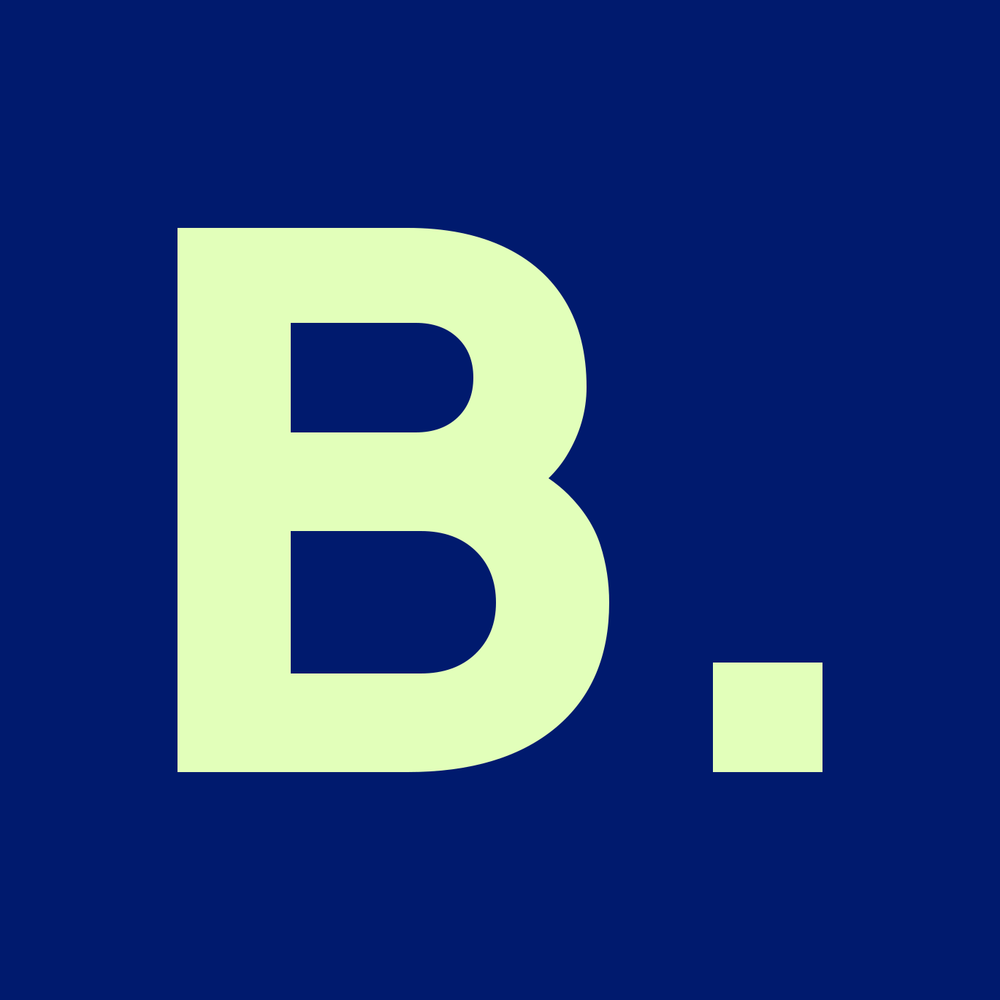
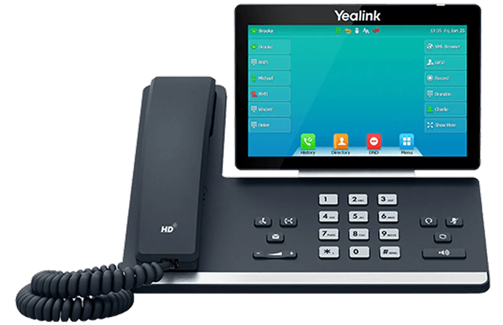
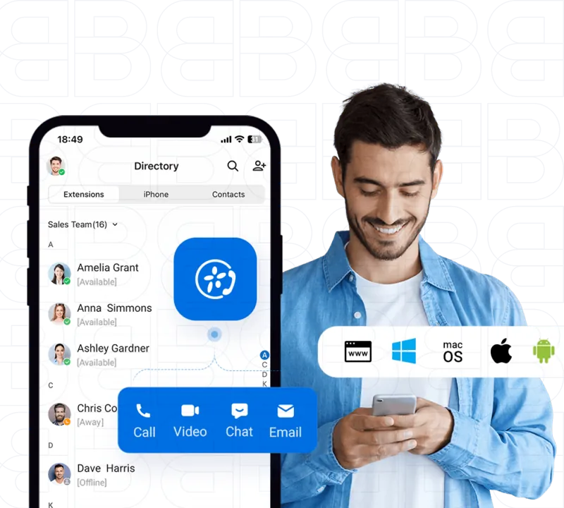
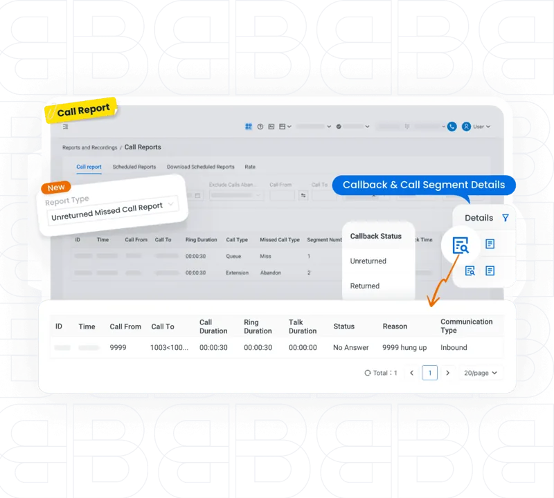
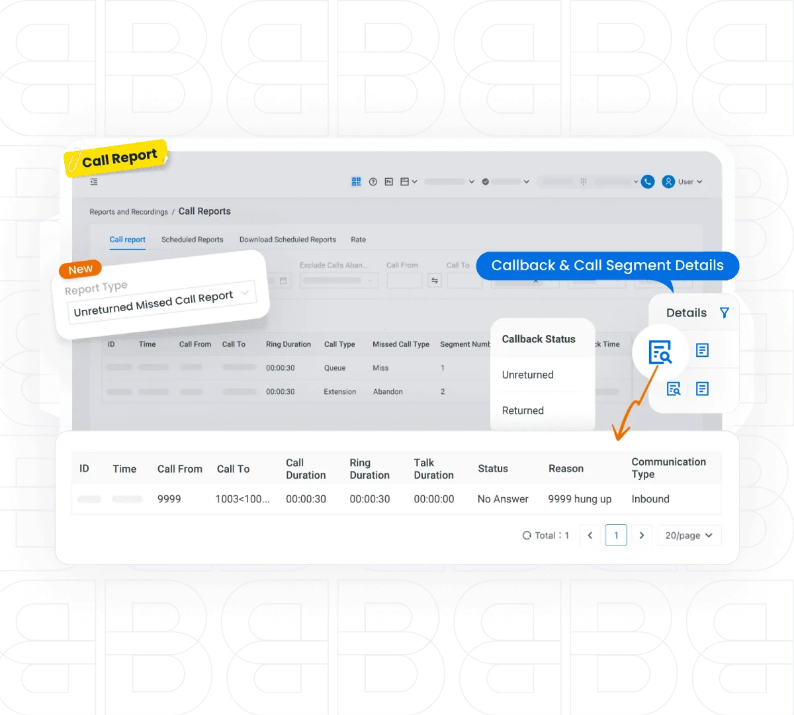

00Start here
About this kit
This page sets out the brand ingredients the homepage concept is built from: Better's own assets, colours and type, the treatments we've added and the motion that brings them to life. There's nothing you need to do here. It's the brand guide behind the concept, kept for reference.
01Brand
What this kit is built from
Better's own brand, as their website and files show it. Better has no brand guidelines, so this kit is built from what's live. It's the brand guide behind the concept. If Better sends guidelines, theirs win.
| Source | What it gives us | Received |
|---|---|---|
| better.co | All 30 pages crawled and rendered: colours, fonts, radii, components, copy and every image the site serves | 21 October 2026 |
| Asset zip from Better's site | 47 site images and 12 interface icons (arrow, plus, chevron, phone, mail, pin). No logo files | 21 October 2026 |
| Email thread with Intergage | The brief: a HubSpot rebuild, about 20 pages, slick and true to the business, up against 4Com | 24 August to 16 September 2026 |
| Better.co brand brain | The audit drafts saved from the crawl: palette, type, imagery, claims and their status | 21 October 2026 |
| Brand guidelines | None exist. Nothing in the kit overrides a rule Better has written down | Not supplied |
Colour
Better's palette as the live site uses it, cleaned of duplicates. Navy does the heavy lifting; the accent is a highlighter. The website uses these through the tokens only.
Proposed balance for the new site, by area. Today it's 88% white, 9% navy and 1% yellow, which reads thin. More navy gives depth; the accent stays rare. New
Typography
Plus Jakarta Sans for headings and Inter for everything people read, as Better uses them. The live site also loads Carmen Sans, Archivo and Outfit in odd places; the new site drops all three.
| Role | Font | Weights | Web licence |
|---|---|---|---|
| Headings | Plus Jakarta Sans | 700 and 800, tight tracking | Open Font Licence, free for web. Self-hosted latin subset |
| Body | Inter | 400 and 600 | Open Font Licence, free for web. Self-hosted latin subset |
Logo as supplied
Better hasn't supplied logo files. The site types its name in Plus Jakarta Sans ExtraBold, and the favicon and share image use the same letters. These versions are built from that typeface to match, as stand-ins until Better sends masters.

| Rule | From their guidelines |
|---|---|
| Clear space | Not stated. Interim: the height of the B on every side |
| Smallest size | Not stated. Interim: 72px wide on screen, the monogram 24px |
| Don'ts | Not stated. Interim: never stretch, outline, recolour outside navy and white, or set on a busy photo without a scrim |
Imagery
Three kinds today: Better's own team photos (the best they have), product composites with handsets and app screens, and stock headset shots. The new site leads with the team and the product, and drops stock where it can.



The image bank: 12 photos and 9 product images, all from better.co, logged with their source in assets/website/README.md. Unsplash or Pexels only to fill a gap, labelled as stock.
Gaps and open questions
What the supplied brand doesn't cover yet, and what we're doing in the meantime. Each gap is also flagged to the brand brain.
| Gap | Why it matters | Asked, or our interim choice |
|---|---|---|
| Logo files | Two versions are live (typed header, share image). We need the master | Stand-ins built from Plus Jakarta Sans. Ask Better for vectors |
| Accent: yellow or lime | The site uses yellow; the favicon and share image use lime | Both in the switcher. Better picks at concept review |
| Figures on the current site | Uptime, response time, minutes and customer counts have no source, and 750+ and 1,000+ customers conflict | Shown as [TBC] until Better confirms each one and its date |
| Partner logo permission | Six partner logos and Julia's House are shown with no explanation | Kept in the kit. Confirm permission and the Julia's House story |
| Original photos | The site serves compressed copies; some stock licences are unknown | Site copies for the concept. Ask for originals and licences |
| Tone of voice | None agreed. The current copy is salesy and makes unbacked claims | Draft lines only, from Better's own site, marked as draft |
02Direction
A step forward
Same Better: navy, the accent, Plus Jakarta Sans, the outlined B, the pill buttons, the team. What changes is how hard they work. Fewer, bigger moves; real product moments instead of screenshots; proof up front; motion that explains how switching works.
Incoming call, routing, waveform and reports built in code, floating over Better's own photos. Sharp, animated, and they follow the accent.
The Trustpilot score, big and sourced, near the top. The team and named engineers ahead of stock.
Better's own line, "one switch away", as a real control that flips a panel to Better. It does something, so it isn't decoration.
Better's outlined B pattern and grid floor, promoted to the signature device at three strengths.
How switching works, step by step, as you scroll. It answers the contract, install and support questions prospects ask after a sales call.
White and stone, navy for depth, the accent as a highlighter. No AI gradients, no overlays on the first screen.
03Elements
Signature device: the B-grid
Better's own outlined B tile and grid floor, from the live hero and footer. Promoted from background texture to the signature device, at three strengths. One strength per view. It takes the colour of the section it sits in.
The switch New
Better's line "Better service is one switch away", made into a working control. It flips a panel, a comparison or a plan to Better. A pill, like the buttons. It always does something; never a decorative icon in a sentence.
Try the live one in the Interaction demos. role="switch" with aria-checked, Space and Enter toggle it, and the label says what it switches.
Highlights
The accent is a highlighter. Better already colours the word "Better." in its headlines; keep that, and add a rounded block and an underline for a phrase. One per heading. Text on the accent is always Better navy.
Buttons
Better's pill buttons, refined: a label and a round arrow. Dark, accent and light, every state. On hover the button lifts and the arrow turns to point forward. Labels in sentence case, two or three words.
Hover lifts 2px and turns the arrow in 250 to 350ms. Focus adds a 2px ring, navy on light and accent on navy. Pressed scales to 98%. Disabled drops to 40% and can't be clicked. The primary button is magnetic on a mouse (Interaction demos).
Product moments New
Better's features shown working, built in HTML instead of flat screenshots, so they animate, stay sharp at any size and follow the accent. They float over Better's own photos. Names, numbers and times in them are samples, labelled as such.
16px radius, white on light and navy-900 on dark, a soft long shadow. One or two per scene, never a pile. Real product photos (the Yealink handset, the app composites) stay as photos.
Icons
One set, replacing today's mix of filled spots and flat illustrations: Material Symbols Rounded, in a 14px-radius tile. Navy tile on light, accent tile for the one that matters. Always with a label.
Better's spot illustrations (hacker, laptop and lock, broken screen) stay on the anti-fraud page only, if at all. They're in assets/website/icons/ for reference.
Image treatments
Better's team photos and product images, in six treatments. Rounded frames to match the pill buttons, navy for depth, the accent once. Two are Better's own (offset block, cut-out panel); four are new.

Type in use
Plus Jakarta Sans for headings, Inter for everything people read. Bigger and tighter than today, with fewer sizes. The full type scale lives in the tokens.
72px · line height 1.02 · tracking −3.5%
48px · line height 1.06 · tracking −3%
28px · line height 1.15 · tracking −2%
20px · line height 1.5 · draft line
16px · line height 1.65
12px · tracking +14%
04Compositions
Hero banner
Better's navy hero, a step forward. The grid floor and B-grid behind, the headline with "Better." in the accent, proof under the buttons, and the team in a rounded frame with product moments floating over it. Copy is Better's own, trimmed.
Making business communication Better.
Reliable VoIP phone systems and business broadband, with WhatsApp integration, call recording and remote working built in.
4.9 on Trustpilot · about 800 reviewsTrustpilot figure checked on 21 October 2026 (4.9, about 800 reviews). Recheck before launch and show the date beside it. [Caller] and [Company] are placeholders, never invented names.
Text and image
Stone background, a chip, a heading in Better's own words, a short tick list and one product image in a rounded frame. The image wipes up as it comes into view.
Turn any device into a working phone line.
Your business number on your mobile and desktop, so calls reach you wherever you're working.
- Calls on mobile and desktop
- Set up in a few clicks
- Works with your desk phones

Draft copy, from Better's own feature bullets. Tick list items to confirm with Better.
Feature cards
A bento grid for Better's features, replacing the carousel. One accent card, one navy, the rest light. Each card is one link; it lifts, the arrow turns and a soft spotlight follows the cursor.
On-hold marketing
Targeted custom messages that inform and add value to your customers.

Call recording
Keep accurate records to improve regulatory compliance.
CRM integration
Automatically pulls up your customer files and notes when they call.
Softphone app
Turn any device into a working phone line.
Call reporting
Real-time analytics on every call.
Anti-fraud
Detection and alerts for telephony fraud, around the clock.
Feature lines are Better's own, from better.co. The anti-fraud line paraphrases their page; its cover terms need confirming before any figure is shown.
How switching works
The question every prospect asks after a sales call, answered in four steps. Static here; as a scroll story in the motion chapter. Steps follow Better's own process from their site and job descriptions. Draft copy.
- 1
Let's chat
Tell us how your business takes calls today and what isn't working.
- 2
Demo and quote
A specialist shows you the system and quotes for your business.
- 3
Install and training
Our engineers set it up and train your team, on site or remotely.
- 4
UK support
Dedicated support from our UK-based team once you're live.
Figures
Big accent numbers on navy, counting up once. Every figure carries its source and date, or a TBC tag until Better confirms it. Never invent one.
Trustpilot score, about 800 reviews
Trustpilot · 21 Oct 2026Connection uptime
TBC · source and periodAverage support ticket resolution
TBC · source and periodTeam members
TBC · current headcountPartner logos
The six partners Better shows today, in a slow marquee. Grey until you point at or tab to one. Pause control and stops off screen. Only with permission to show each one.
Switch panel
Better's closing line, now with the switch in it. Navy, the B-grid at structure strength, the cut-out photo and vertical wordmark from Better's current panel. Flip the switch.
Better service is one switch away.
Current providerBetterHigh-performance service and contracts that scale as you do, with support from a team that picks up.
Let's chat"A team that picks up" is a draft line: confirm it with Better or swap for their own.
Social tiles
LinkedIn and Instagram, from the same ingredients. A landscape post (1200 × 627) and two squares (1080 × 1080): recruitment, proof and a product tip. Built in HTML here; exported as images for posting.
We're hiring in Bournemouth.
Sales, support and engineering roles. [TBC] open now.
on Trustpilot, from about 800 reviews.
Trustpilot · 21 October 2026
Calls that follow you.
Your business number on any device.
The hiring tile needs the current number of open roles. The score tile needs rechecking and redating on the day it posts.
05Motion and interaction
Load-ins
How things arrive. Once, as they come into view, eased out. Better's motion should feel quick and sure, like a call that connects first time: a short rise, a clean wipe, a little spring on the product. Replay any demo.
Making business communication Better.
Better service is one switch away.
Depth
Layers moving at different speeds as you scroll, so the page has depth. Driven by the page scroll, once a frame, only while on screen. Scroll past each one.
6 · Layered parallax B-grid slowest, chip fastest
7 · Frame grows to full width Scale tied to scroll
One team. One switch.
8 · Grid floor drifts, the B-grid draws in Hero backdrop
Sticky and sideways
Sections that hold still while you read. A scroll story for how switching works, stacked feature cards, and a rail that moves sideways as you scroll down. Normal scroll speed, released at both ends. On phones they become simple stacks and a swipeable rail.
9 · Scroll story: how switching works Sticky, line fills, steps light
- Let's chat
Tell us how your business takes calls today and what isn't working.
- Demo and quote
A specialist shows you the system and quotes for your business.
- Install and training
Our engineers set it up and train your team, on site or remotely.
- UK support
Dedicated support from our UK-based team once you're live.
10 · Stacked cards Each sticks; the one beneath eases back
On-hold marketing
Targeted custom messages that inform and add value to your customers.
CRM integration
Automatically pulls up your customer files and notes when they call.

Softphone app
Turn any device into a working phone line with just a few clicks.
Call reporting
Real-time analytics on every call.

11 · Horizontal rail Scroll down to move it sideways; arrows and Tab too
Interaction
Every button, card and control answers back. Cursor effects run on a mouse or trackpad only; each has a touch equivalent. Nothing important lives only on hover.
Today
Calls ring out when you're awayCustomer notes in another windowNo idea which calls you missedFind what's Better.
Can I keep my existing numbers?
[TBC] Better's answer. The live site lists this question with no answer.
Is training included?
[TBC] Better's site mentions on-site and remote training. Confirm what's included.
What happens if there's an outage?
[TBC] Better's answer.
Ambient and header
Things that move on their own, gently: a live waveform, a ringing call, a counting score, the partner marquee above. Each one stops off screen and has a pause control. Then the header, which steps aside on the way down and comes back on the way up.
21 · The partner marquee is under Compositions, with its pause. 22 · Every button's hover, focus and press states are under Buttons.
Headline load-ins New
Six ways a headline can arrive. Pick one per page for the hero, and use the word rise (1) everywhere else. Each plays once in view; replay to see it again.
Better service is one switch away.
Say hello toBetter everything.
Phone systems,broadband andthe tools around them.
Business calls, broadband, mobiles and support, made Better.
Type and the cursor New
Type that answers the pointer. On touch, drag across it. Use one of these per page, on a single word or line, never on body copy.
Calls that follow you to any device.
Every Better system can come with , and , plus an app that turns any device into a working phone line.
Imagery in motion New
Better's own photos and product images, made to move: an image that follows the cursor, a photo that grows out of the word Better, a photo fan, a strip slideshow and a drag-to-compare.
36 makes the case for real team photos over stock. Use it in a pitch, not on the live site.
Cards and hover New
More ways for a card, a link or a button to answer back. Every one works on focus as well as hover, and on touch with a tap.
37 · Cards flip Hover, focus or tap
38 · Panels expand Hover or focus; stacked on phones
39 · Border glows where the cursor is Mouse; focus shows the full glow
42 · Team cards: photo zooms, caption slides up Hover or focus; captions always on for touch
Parallax and backgrounds New
The B-grid, the grid floor and a field of signal dots, brought to life. Cursor effects run on a mouse; on touch they drift on their own or follow a drag.
43 · Layers follow the cursor Deeper layers move more
Always on.
Calls that follow you.
Built on solid ground.
Icons in motion New
Each feature icon has its own small move: the phone rings, the mic pulses, the chart grows. They play once as the set comes into view, then on hover and focus. Notifications stack in like a phone, and the features orbit the B.
48 · Every icon has a move Hover, focus or tap a tile
The switch changes everything New
Flip the switch and the whole component turns into Better: the background floods navy from the switch, the copy changes, icons pop, the button lights up. Copy is draft, built from Better's own feature lines.
As they are today
With Better.
- One desk phone per person
- Calls ring out when you're away
- Notes in another window
- Calls on desk, mobile and desktop
- Calls follow you through the app
- Your CRM opens when they call
Business phones, made Better.
Phone systems, broadband and the tools around them, from a team in Bournemouth.
Let's chatMore headline load-ins New
Five more ways in, all from the world of calls: a message that types itself, signal bars, a waveform that settles into words, two halves that connect and Better's number dialling in. Each plays once in view; replay to see it again.
Lines open. Let's chat.
Say hello to Better.
Making business communication Better.
61 and 65 suit a contact page or closing panel. 62 and 63 suit a section heading. 64 is a hero load-in for Better's own line. Keep to one per page.
The grid floor, more ways New
Better's signature room, the B-grid wall over a grid floor, rebuilt in code so it can move. 47 turns it to the cursor; these four set it running, send signals across it, light it under the cursor and build it as you scroll.
Always moving.
Find your footing.
Built on solid ground.
The room replaces the flat floor image: it stays sharp at any size, follows the accent and weighs a few lines of CSS. Use one room per page, usually the hero (see the page blocks).
More sticky and sideways New
Sections that hold still while the story moves past, and sections that move sideways as you scroll down. The page always scrolls at its normal speed and lets go at both ends.
70 · The phone stays, the screen changes Sticky; each step swaps the screen
Your number, wherever you are.
Calls ring on your desk phone, your mobile and your laptop. Pick up on whichever is closest.
Every call, on record.
Record calls for training and disputes, and find them again when you need them.
Know who's calling before you answer.
Your CRM opens the customer's notes as the call comes in.
Reply where your customers already are.
WhatsApp messages come into the same place as your calls.
71 · The photo stays, the text moves past Sticky; the photo wipes to match the text
Support that knows your setup.
A UK team on the end of the phone, who can see how your system is set up.
Desk phones that just work.
Installed and set up by Better's engineers, with training for your team.
Work from anywhere.
The softphone app puts your business number on your laptop and mobile.
A team that picks up.
Better's own team, based in Bournemouth.
72 · Switching, step by step, sideways Pinned; scroll moves the line along
How switching works
Draft copy from Better's own processTell us how your business takes calls today and what isn't working.
A specialist shows you the system and quotes for your business.
Our engineers set it up and train your team, on site or remotely.
Dedicated support from our UK-based team once you're live.
73 · Cards slide in from the side Pinned; each card arrives as you scroll
Everything your phones should do.
Six features, one at a time.
Desk phones, mobile and desktop, on one number.
The line your calls run on.
For training, quality and disputes.
Customer notes open as they call.
Messages alongside your calls.
Cover against fraudulent calls.
74 · Photos run sideways and lean with your speed Tied to scroll; leans as you scroll faster
More switches New
Three more components the switch turns into Better. Each floods out as a circle from the switch itself, so the change always starts where you pressed.
Calls ring the office.
Calls ring your mobile.
Sample routing. Set by time of day, or by hand.
My team works from
- Desk phones
- Office broadband
- Call reporting
- Softphone app
- Calls on your mobile
77 · Build your setup Each card switches on from its own switch
75 and 76 are numbered left to right. Routing details and feature names are samples and draft copy.
More cards and hovers New
Five more card designs. Each one works on hover, keyboard focus and tap, and the whole card is the link.
78 · Navy floods in from where you enter Direction-aware; focus floods from the corner
79 · The card opens its product moment Hover, focus or tap
Timing
One table for every motion on the site. Easing out for arrivals, in-out for changes of state, a spring only for objects that pop into place: product moments, the switch, cards and chips.
| Motion | Timing | Easing | Where |
|---|---|---|---|
| Hover, focus, press | 250ms; arrow turn 350ms | Ease out cubic-bezier(.2,.7,.2,1) | Buttons, links, cards |
| Headline rise | 700ms, words 70ms apart | Ease out | Hero and section headings, once |
| Photo wipe | 1000ms wipe, 1400ms settle | Ease in-out cubic-bezier(.65,0,.35,1) | Feature photos |
| Product moments | 800ms, 120ms apart | Spring cubic-bezier(.34,1.56,.64,1) | Hero, feature sections |
| Highlight paint | 800ms after 250ms | Ease in-out | One phrase per section |
| Stagger | 500ms, 60ms apart | Ease out | Lists, chips, cards |
| Parallax and grow | Tied to scroll, once a frame | Linear to scroll | Feature bands, About |
| B-grid draw-in | 1600ms | Ease in-out | Hero backdrop |
| Scroll story and rail | Tied to scroll; step fade 600ms | Ease in-out | How switching works, features |
| The switch | Knob 450ms, panel 700ms, rows 90ms apart | Spring, then ease in-out | Switch panel, comparisons |
| Counters and stars | 1200ms, once | Ease out | Figures, proof |
| Waveform, ring, marquee | Loops: ring 2.4s, marquee 36s | Ease out, linear | Ambient, with pause |
| Header | 350ms | Ease out | Every page |
| Letter cascade, line mask | Letters 700ms, 22ms apart; lines 900ms, 140ms apart | Ease out on letters, ease in-out on lines | Section headings, once (22, 24) |
| Accent wipe | 1000ms bar, words show at the midpoint, lines 180ms apart | Ease in-out | One accent phrase (23) |
| Departures board, scramble | Ticks of 50 to 55ms, under 1s in all | Linear | Short labels and figures (25, 27) |
| Rotating word | 2.4s a word, 600ms change | Ease in-out | Loop, with pause (26) |
| Cursor follow | Eased each frame, 600ms settle on leave | Ease out | Fine pointers only (28, 32, 33, 43, 46, 57, 60) |
| Card flip, panel expand | Flip 700ms, expand 600ms | Spring on the flip, ease in-out on panels | Cards (37, 38) |
| Button hovers | 400 to 500ms; ring pulse loops 1.2s while hovered | Ease in-out | One style per site (40) |
| Magnetic pull | 400ms back to rest; a few pixels at most, only when the cursor is close | Spring | Primary button only (12, 60) |
| Icon moves | 900ms, 110ms apart | Ease out | Once in view, then on hover (48) |
| Background drift, orbit | Loops: drift 22s, orbit 28s | Linear | Ambient, with pause (44, 49, 50) |
| Switch flood | 800ms flood, copy 400 to 500ms, parts 110ms apart | Ease in-out, spring on parts | Switch components and heroes (51 to 55) |
| Message types, number dials | Typing 38ms a letter after 900ms of dots; digits 900ms, 70ms apart | Linear, ease in-out | Contact and closing panels (61, 65) |
| Signal bars, waveform, halves | Bars 140ms apart, words from 600ms; wave 1.3s then words; halves 800ms | Spring on bars, ease out on words | Section headings, hero (62 to 64) |
| The Better room | Builds over 1.6s; turns over 1s; floor loop 1.6s; signals 2.2 to 3.4s | Ease in-out, linear for loops | Hero and one feature band (47, 66 to 69) |
| Sticky swaps | Screen 600ms, photo wipe 1s, as the step reaches mid-screen | Spring on screens, ease in-out on wipes | Feature pages (70, 71) |
| Pinned sideways | Tied to scroll; steps light at their point on the line | Linear to scroll | Switching, features (72, 73) |
| Strip slideshow, notifications | Strips 900ms, 70ms apart, 5s a slide; a notification every 2.4s | Ease in-out, spring | With pause (35, 49) |
| Card floods and frames | 550 to 700ms | Ease in-out | Cards (78 to 82) |
| Accordion | Opens 420ms, closes 320ms | Ease out, ease in-out | FAQs (20) |
| Reduced motion | Final state, no movement | None | Everywhere |
06Interactive banners
Interactive heroes New
Three hero banners you can play with. The headline and copy come from Better's own lines; anything else is a draft or a placeholder.
55 · Switch the hero Flip it: the whole first screen turns into Better
Your business phones, as they are.
Desk phones, a broadband contract and a few apps that don't talk to each other.
Making business communication Better.
Reliable VoIP phone systems and business broadband, with WhatsApp integration, call recording and remote working built in.
56 · Answer the call The call rings; answer it and the hero connects
Calls that follow you.
Connected. Better.
Your business number on your desk phone, your mobile and your laptop. Pick up wherever you are.
Let's chat57 · Layers and light follow the cursor Parallax and a B-grid spotlight; drifts on touch
Say hello to Better everything.
Phone systems, broadband and the tools around them, from a team that picks up.
Interactive CTA banners New
Closing panels that ask for a small action first. Each still has a plain button or link, so nobody has to play to get in touch.
58 · Slide to switch Drag, or use the arrow keys
59 · Pick what you need The button writes itself
60 · The accent panel B-grid lights under the cursor; soft magnetic button
Better service is one switch away.
High-performance service and contracts that scale as you do.
The phone number is Better's main line as shown on their site, which formats it two ways (0330 118 3069 and 0330 1183 069). Confirm before launch.
07Page blocks
Header and menu New
The header for every page: logo, four links, Better's number and the main button. Features opens a mega menu with a product moment; on a phone everything moves into a full-screen menu. Hides on the way down, returns on the way up (19). Menu items are a draft IA to agree in stage 2.
Page content sits here. Open Features, or narrow the window to see the phone menu.
Home hero: the Better room New
The first screen. The room builds (floor rises, B-grid wall fades up), the headline rises word by word, then the product moments spring onto the floor. Moving the mouse turns the room a few degrees. Headline and line are Better's own.
Making business communication Better.
Reliable VoIP phone systems and business broadband, with WhatsApp integration, call recording and remote working built in.
4.9 on Trustpilot · about 800 reviews · 21 Oct 2026Text and image, both ways New
The workhorse section, image left or right. The photo drifts slower than the page and the product moment faster, so the pair has depth without anything sliding about. A full-width band carries one line over a photo. Alternate sides down a page.
Support that knows your setup.
When something's not right, you talk to Better's own team. They can see how your system is set up, so you don't have to explain it twice.
How support worksSet up for you, not by you.
Better's engineers install your phones and show your team how to use them, on site or remotely.
What happens on install dayA team that picks up.
Copy is draft. Install and support details follow Better's process from their site and job descriptions; the ticket and date are samples.
Contact New
Better's details on one side, a short form on the other. Interests are toggle chips, errors appear in words under the field, and sending shows a clear result. On the live site this is the HubSpot form, styled to match; the fields should mirror Better's current form [TBC].
Let's chat.
Tell us how your business takes calls today. We'll come back to you [TBC: response time].
- Call0330 118 3069
- Emailhello@better.co
- Visit80 Holdenhurst Road, Bournemouth BH8 8AQ
Demo only: nothing is sent. Try sending it empty to see the errors.
Form fields New
Every state a field can be in. Labels always sit above the field and stay visible. Errors say what to do, in words, under the field. Focus is a 2px navy ring with a soft accent glow.
Add the part after the @, like better.co
08Logo
Logo scale
Sizes on the website, and the smallest each version can go. Stand-in files until Better sends masters.
| Version | Smallest on screen | Smallest in print |
|---|---|---|
| Wordmark | 72px wide | 20mm wide |
| B. monogram | 24px wide | 8mm wide |
| Favicon and profile | 16px (favicon), 400px (profile) | Not for print |
Interim sizes, set for this kit. Better hasn't stated any. Clear space: the height of the B on every side.
Logo usage
Better navy on light, white on navy, white over a navy scrim on photos. Never on the accent except in navy, never recoloured to the accent.
09Rules
Rules sheet
Do, don't and why for every piece in this kit.
| Piece | Do | Don't | Why |
|---|---|---|---|
| Corners | Pill for buttons, chips and the switch. 16px for cards and UI, 28px for panels and photos. | Square corners, or mixed radii in one component. | Better's buttons are already pills; the rest follows them. |
| Case | Sentence case for headings, navigation and buttons. "Better." with a capital B and full stop in the highlight. | Title Case or all capitals for headings. | Easier to read and calmer in tone. |
| Colour balance | White and stone most of the page, navy for depth, the accent rare. | Large accent backgrounds outside the footer and social tiles. | The accent only works as a highlighter if it stays rare. |
| Highlights | One per heading: the accent word on navy, a block on light, an underline on stone or with lime. | Accent text on white. Two highlights in one heading. | Yellow on white is 1.58:1, lime 1.09:1. |
| B-grid | One strength per view. Feature once per page. | Feature strength behind body copy. Recolouring it to the accent on navy, except in the spotlight demo. | It's texture that says Better, not a pattern to fill space. |
| The switch | Use it where it switches something, with labels either side and role="switch". | As an icon in a sentence, or as a decorative toggle. | It has to do something, or it's just another decoration. |
| Product moments | One or two per scene, sample data labelled, real product photos kept as photos. | Invented names, numbers or reviews in a card. A pile of cards. | They show the product working; fake detail breaks trust. |
| Photos | Better's team first, product second, stock in navy duotone only. | Stock headset shots as the lead image. AI images as real people. | The team is what competitors can't copy. |
| Proof | The Trustpilot score with its date. Figures with a source, or TBC. | Uptime, customer counts or ratings without a source and date. | Prospects check Better after a sales call; proof has to hold up. |
| Copy | Better's own lines, trimmed. Specific, warm, plain. | Unbacked superlatives ("rock-solid", "double productivity"). Exclamation marks. | Claims without proof undermine trust. |
| Motion | One lead motion per section. Spring only on product moments and the switch. | Scroll-jacking, loops without a pause, motion that explains nothing. | Calm, useful and accessible to everyone. |
| Accessibility | WCAG 2.2 AA: 4.5:1 for text, 3:1 for large text and controls, visible focus, keyboard friendly. | Rely on colour or hover alone. | Everyone can use the site. |
| Logo | Navy on light, white on navy and photos. Stand-ins replaced before client review. | Stretch, outline, recolour or redraw it. | The masters aren't in yet. |
Technical guardrails
The rules every stage of the website follows, from tokens to launch. Load this file into Claude Code before building anything.